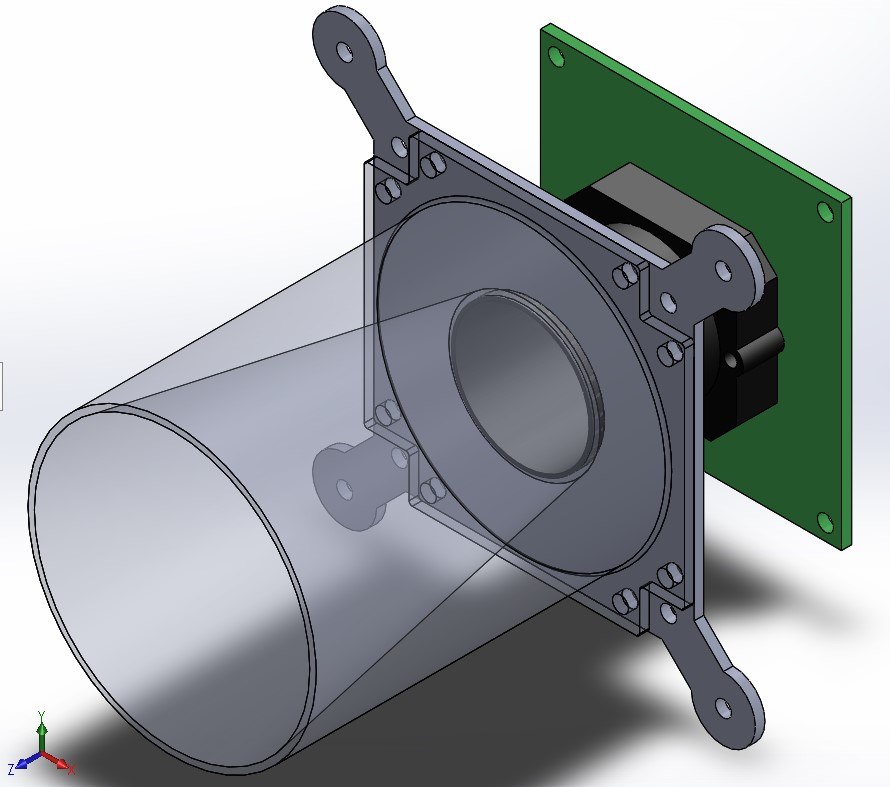
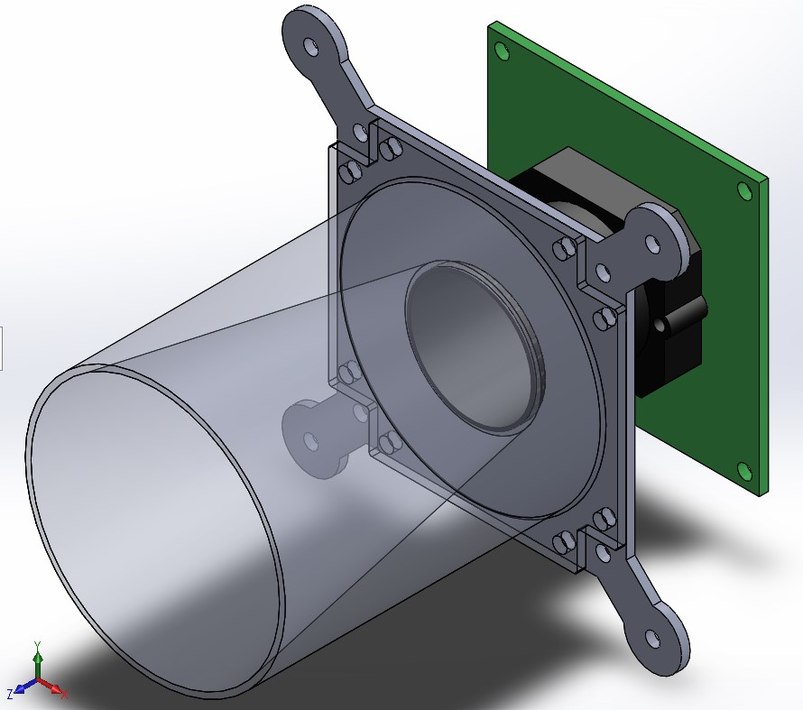

A star tracker makes use of numerous stars while estimating attitude. The greater number of data points allow it to achieve greater accuracy than the traditional methods that involve a combination of the sun sensor and magnetometer, which were used in Pratham. Such a method requires the use of the direction of the Earth’s magnetic field in addition to the direction vector with respect to the Sun for attitude determination. However, such a sun-sensor and a magnetometer setup cannot be used for deep space missions due to the absence of a reference magnetic field in interplanetary space.
STADS processes the images of stars taken on-board the satellite, and subsequently extracts the positions of the stars on the image to further estimate the orientation of the satellite We are currently designing a system that would perform this entire step in under approximately 250ms, thereby allowing for an update rate of 4 Hz.